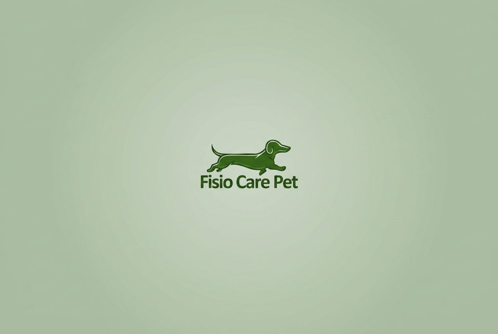
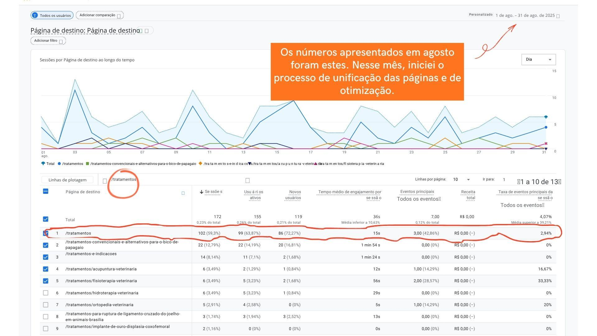
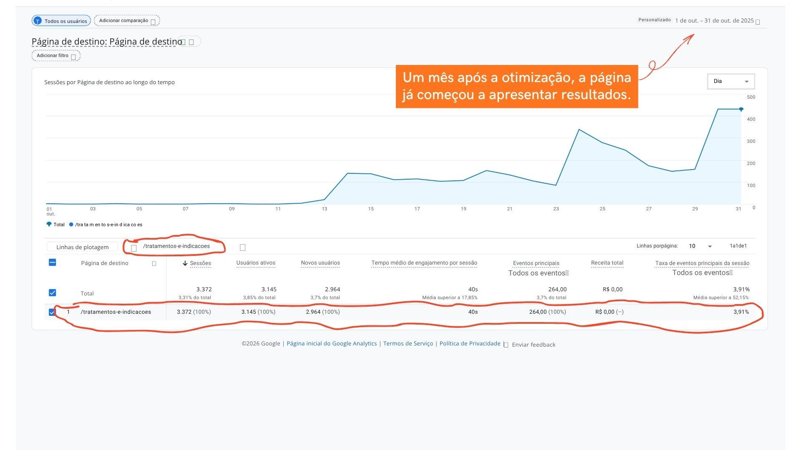

Case de Sucesso
Fisio Care Pet | SEO Técnico e CRO
Reorganização da arquitetura do site e unificação de páginas concorrentes fizeram as sessões saltarem de 18 para 20.978 por mês, transformando a página em um verdadeiro canal de aquisição orgânica.

O desafio
Páginas concorrendo entre si e autoridade fragmentada
A Fisio Care Pet possuía diversas páginas relacionadas aos tratamentos veterinários, mas a estrutura do site dificultava tanto a experiência do usuário quanto o entendimento do Google sobre a autoridade daquele conteúdo.
Além disso, existiam páginas concorrendo entre si para as mesmas intenções de busca, fragmentando o tráfego orgânico e reduzindo o potencial de posicionamento.
Entre os principais desafios estavam:
- Páginas duplicadas;
- Arquitetura de conteúdo pouco eficiente;
- Baixa consolidação de autoridade;
- Dificuldade para transformar visitantes em potenciais pacientes;
- Crescimento orgânico instável.
A estratégia
Auditoria, unificação e jornada de Inbound
O projeto foi desenvolvido considerando SEO e criação de conteúdo visando funil. O objetivo era reorganizar toda a estrutura para acompanhar a jornada do tutor, da descoberta do problema até a decisão de procurar atendimento especializado.
Auditoria técnica
Análise completa das páginas usando Google Search Console, Google Analytics e benchmarking de concorrentes para identificar gargalos técnicos e oportunidades de crescimento.
Arquitetura da informação
Duas páginas competiam pela mesma intenção de busca. Foram unificadas em uma única página estratégica, consolidando autoridade e facilitando rastreamento e navegação.
Estratégia de Inbound Marketing
Toda a página passou a conduzir o visitante pelas etapas de descoberta, consideração e decisão, aproximando o conteúdo da lógica do Inbound Marketing.
SEO On-Page
Estrutura de headings, organização semântica, revisão dos conteúdos, otimização de palavras-chave, hierarquia da informação e fortalecimento da autoridade temática.
Resultados
Um mês após a implementação
Crescimento aproximado nas sessões
Sessões mensais na página
Novos usuários em dezembro
Página mais acessada do site
Agosto: antes da otimização

Outubro: um mês após a otimização

Antes
- • Páginas duplicadas competindo pela mesma busca
- • 18 sessões mensais na página
- • Autoridade fragmentada entre URLs
- • Crescimento orgânico instável
Depois
- • Página única e consolidada
- • 20.978 sessões mensais
- • Autoridade concentrada em uma URL estratégica
- • Página mais acessada de todo o site
Sua arquitetura está travando seus resultados?
Quando SEO técnico e Inbound Marketing trabalham juntos, o site deixa de ser apenas institucional e passa a funcionar como um verdadeiro canal de aquisição orgânica.
Falar sobre meu projeto